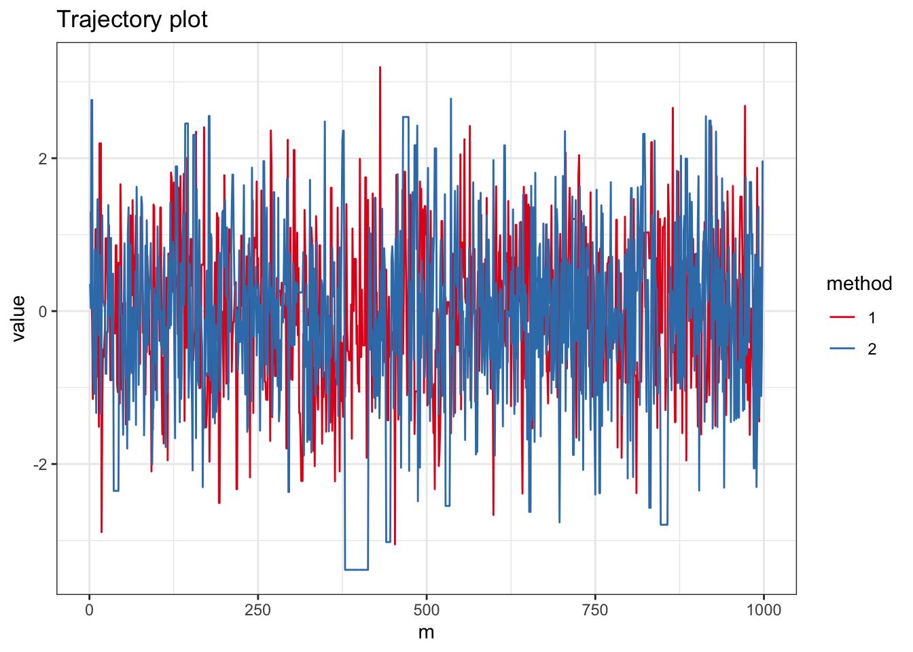
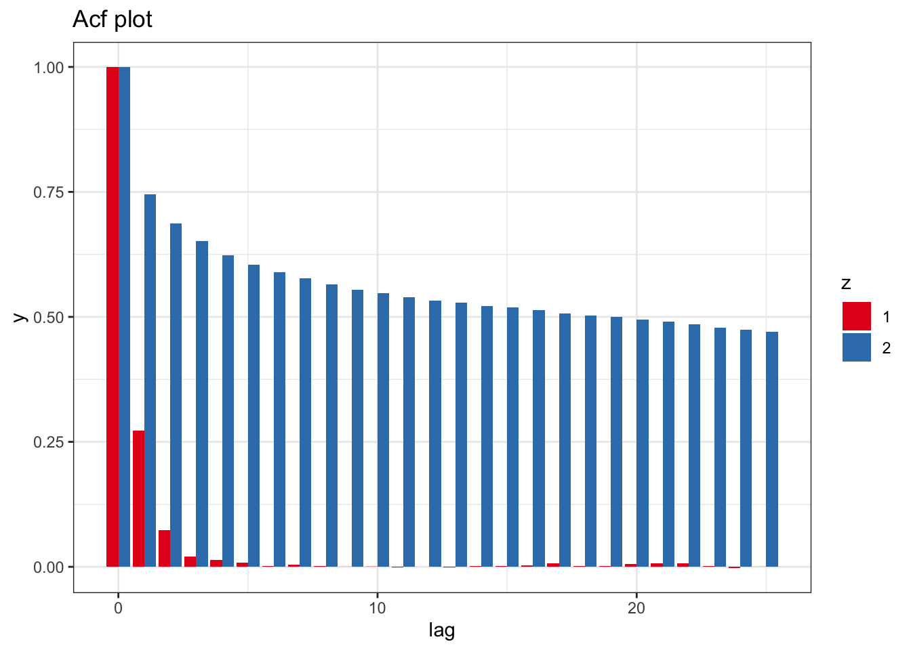

Chapter 6 メトロポリス・ヘイスティングス法
Solution. メトロポリス・ヘイスティングスカーネルの\(\alpha(x,y)\)を\(\beta(x,y)\)でおきかえたマルコフカーネルを\(P\)と書く． まず定理6.1と同じ結論が従うことをみよう． 定理6.1の証明と同じように， \[ \int_{x\in A, y\in B}\pi(x)q(x,y)\beta(x,y)\mathrm{d}x\mathrm{d}y= \int_{x\in A, y\in B}\pi(y)q(y,x)\beta(y,x)\mathrm{d}x\mathrm{d}y \] を示せば良い．被積分関数に注目すると \[ \pi(x)q(x,y)\beta(x,y)= \frac{\pi(y)q(y,x)\pi(x)q(x,y)}{\pi(x)q(x,y)+\pi(y)q(y,x)} \] となり\(x, y\)について対称な関数であることがわかる．だから，\(x, y\)を入れ替えても同じ値であり，この事実から示したい等式がわかる．したがって\(P\)は\(\Pi\)-対称であり，定理4.8より\(\Pi\)-不変でもある．
つぎに定理6.2を示そう．これについても定理6.2の証明とまったく同じように\(\beta(x,y)>0\ (x,y\in E)\)であることから \[ P(x, A)\ge \int_Aq(x,y)\beta(x,y)\mathrm{d}y=:k(x,y)>0 \] によって定理4.6から結論が従う．よって\(P\)はエルゴード的．Nのサンプルを生成し，経路図と採択率，事項相関図を生成してみよう．
N <- 1e5 # No. of iteration
N1 <- 1e3 # No. of iteration for trajectory plot
lag <- 25 # Lag of MCMCs
pi1 <- function(x) dnorm(x) # Target #1
q1 <- function(x) dcauchy(x) # Proposal #1
w1 <- function(x) pi1(x)/q1(x) # Ratio #1
w2 <- function(x) 1/w1(x) # Ratio #2
vec1 <- numeric(N) # Output #1
vec2 <- numeric(N) # Output #2
x0 <- numeric(1) # Initial value
# MCMC #1
x <- x0
for(i in 1:N){
y <- rcauchy(1)
if(runif(1) < w1(y)/w1(x)){
x <- y
}
vec1[i] <- x
}
# MCMC #2
x <- x0
for(i in 1:N){
y <- rnorm(1)
if(runif(1) < w2(y)/w2(x)){
x <- y
}
vec2[i] <- x
}
data.fr <- melt(data.frame(x = c(vec1, vec2), m = rep(1:N,2), method = factor(rep(c(1,2),each=N))), id =c("m","method"))
ggplot(subset(data.fr, m < N1), aes(x = m, y = value, color=method)) + geom_path() + theme_bw() + scale_color_brewer(palette = "Set1") + ggtitle("Trajectory plot")
## [1] "Acceptance probability #1 0.70507"## [1] "Acceptance probability #2 0.77516"acf1 <- acf(vec1, lag = lag, plot = FALSE)
acf2 <- acf(vec2, lag = lag, plot = FALSE)
M <- length(acf1$lag)
data.fr <- data.frame(lag = rep(as.vector(acf1$lag),2), y = c(as.vector(acf1$acf), as.vector(acf2$acf)), z = factor(rep(c(1,2), each=M)))
ggplot(data.fr , aes(x = lag, y = y, fill=z)) + geom_bar(stat = "identity", position = position_dodge(), alpha=1.0) + theme_bw() + scale_fill_brewer(palette = "Set1") + ggtitle("Acf plot")
Solution. ３つのステップを行列で表すと，それぞれ \[\begin{align*} \begin{pmatrix} 1&h/2 \\ 0&1 \end{pmatrix}, \begin{pmatrix} 0&1 \\ -h&1 \end{pmatrix}, \begin{pmatrix} 1&h/2 \\ 0&1 \end{pmatrix} \end{align*}\] をひだりから縦ベクトル\((x,w)\)に作用させることに対応する．よって求める行列は \[\begin{align*} \begin{pmatrix} 1&h/2 \\ 0&1 \end{pmatrix}~ \begin{pmatrix} 1&0 \\ -h&1 \end{pmatrix}~ \begin{pmatrix} 1&h/2 \\ 0&1 \end{pmatrix} = \begin{pmatrix} 1-h^2/2&h+h^3/2 \\ -h&1-h^2/2 \end{pmatrix}. \end{align*}\]